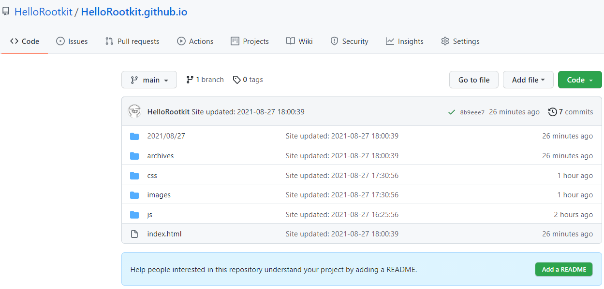
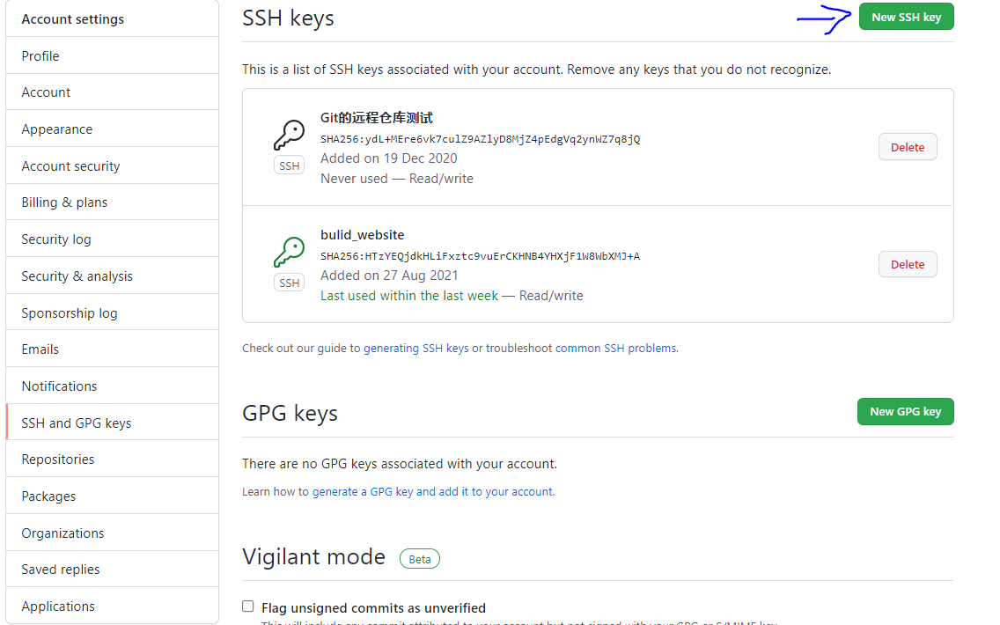
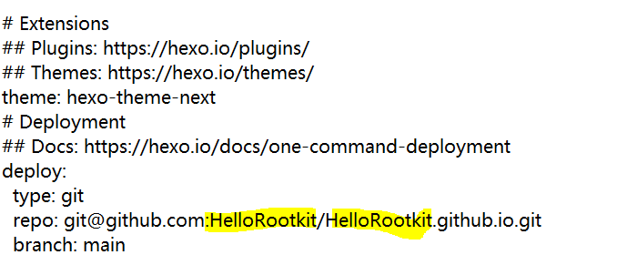
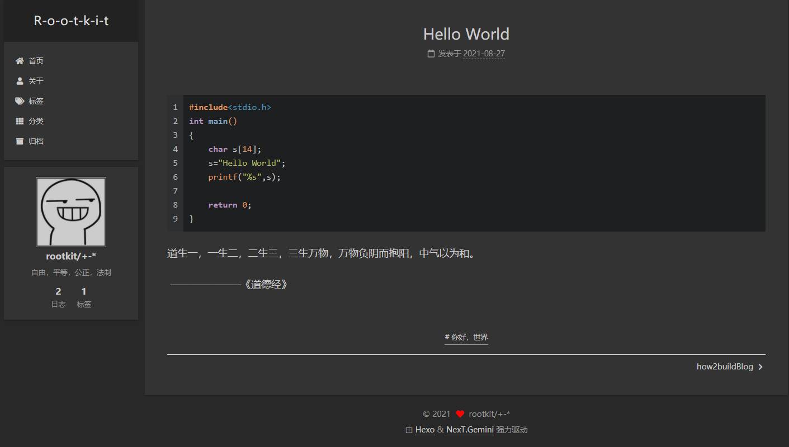

how2buildBlog
搭建好博客，记录搭建过程：
搭建博客：
博客搭建基于【Github+hexo】模式；用的是hexo的next的模板。
准备工具：
1.git
2.hexo
3.github
4.nodejs
准备工作：
1.首先是在GitHub上创建一个仓库，仓库名称需为：名称.github.io
名称最好是和仓库名相同，这样方便索引：

像这样即可
2.然后需要先安装git（熟悉Windows的可以直接用cmd）；然后下载nodejs，用node -v进行检查是否安装成功；然后安装npm install hexo -g用命令：hexo -v查看是否安装成功；之后需要安装hexo的一系列的以来文件nmp install hexo-deployer-git --save,这里需要注意的是—save的位置可以放到install那里，这个看个人情况。
3.这里最后需要配置SSH KEY，相当于一个身份验证：
通过git，输入命令：cd ~/.ssh进入ssh文件——->通过命令cat id_rsa.pub查看密钥，然后在github的设置里：

将刚刚的一大串直接复制进去，这样就可以了
用ssh -T git@github.com检验是否成功
成功用
1 | $ git config --global user.name "liyunchen" #你的github用户名 |
命令来设置邮箱和用户名
开始搭建：
1.在一个较大的盘里新建文件夹，取一个洋文名字防止出灵异事件
2.git bash here，在该目录下打开git
3.
1 | 1.hexo init |
事先在https://hexo.io/themes/里下载好主题，将主题文件夹拖进【themes】文件夹然后回到主目录，用记事本打开主目录里的_config.yml文件，划到最后，找到themes：

这里标黄的是要改成自己的仓库，下面的branch根据实际情况决定是main还是master。
themes后面跟的是主题的文件夹的名字，注意空格，千万不能少
4.
1 | 1.hexo s#在本机生成一个预览可以看到效果 |
此时就可以看到自己的博客的初始状态，也就搭建基本完毕了
完善博客：
搭建好之后需要完善成人类友好的界面（next为例子）
1.首页风格：
找到你下载的主题里的_config.yml文件（没错，主题里面也有）
找到：
1 | //这里是四种风格，选一个喜欢的去掉前面的井号 |
1 | //这里是菜单设置，去掉喜欢的前面的# |
1 | //侧栏设置，看好适用风格 |
1 | //头像设置，将头像设为header.jpg，然后拖到themes\hexo-theme-next\source\images目录下 |
2.语言文字：
打开主目录的_config.yml文件，开头就是这几个，后面的内容自己写写，注意空格
1 | # Site |
效果图：

上传日志：
在该文件夹里通过git或者cmd使用命令hexo new '#######',就会在sources目录里生成一个#####.md文件，然后正常写点东西（在下面的正文部分，上面的灰色框是自带的）
写完之后通过命令hexo g和hexo d来上传
这样就完成了上面的效果。